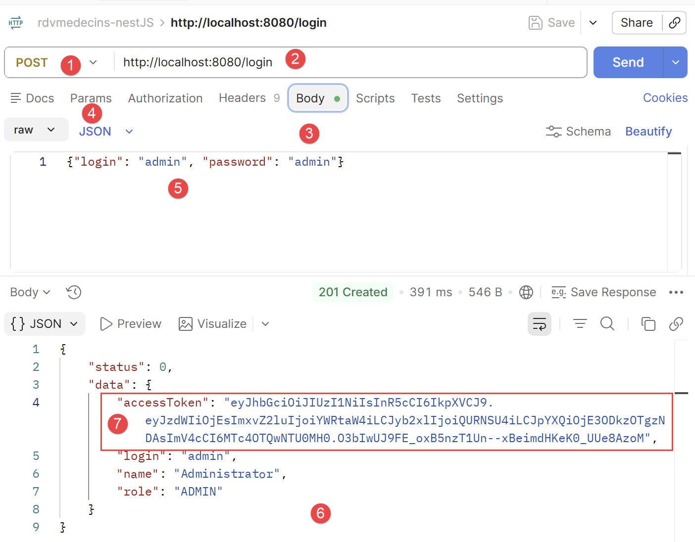
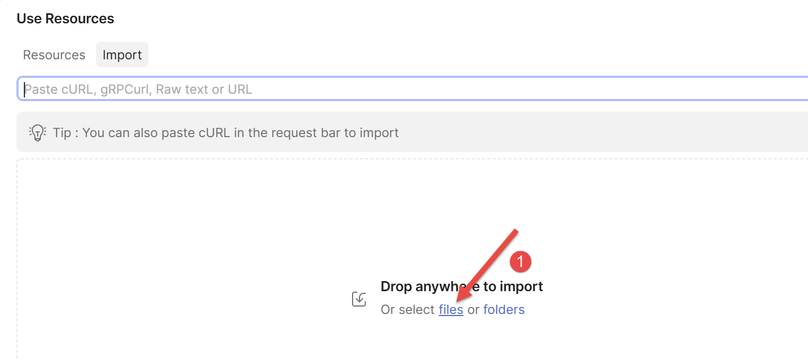
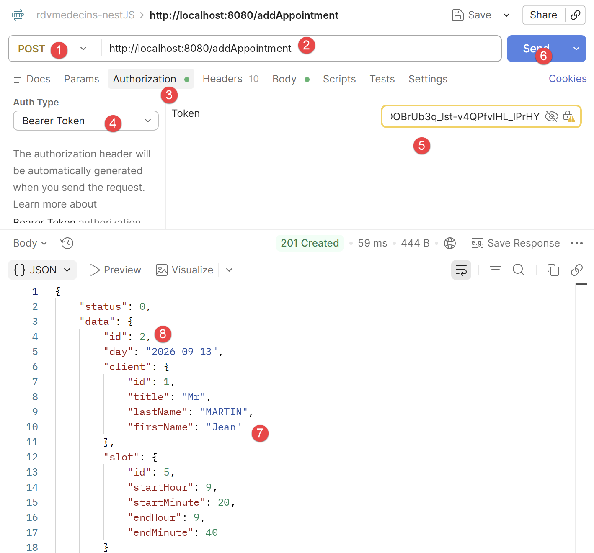
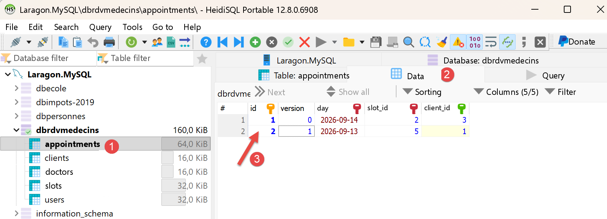
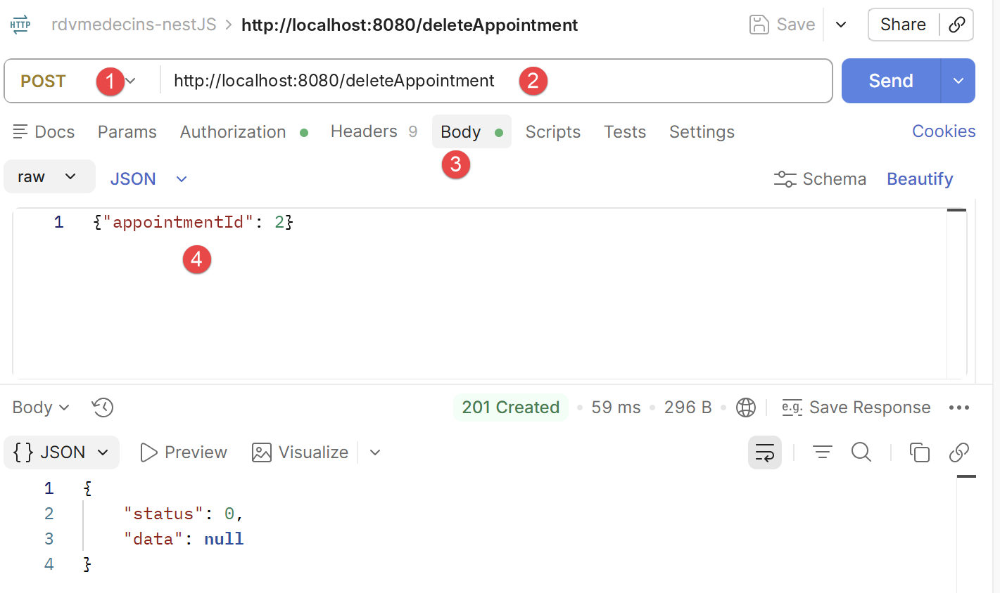

2. Kapitel 1 - Einrichtung der Arbeitsumgebung
2.1. Werkzeuge installieren
- Node.js: Laden Sie Version 22 (oder höher) von nodejs.org herunter und installieren Sie sie. Überprüfen Sie die Installation in einem Terminal:
- Visual Studio Code (VSCode): kostenlos erhältlich unter code.visualstudio.com. Installieren Sie die Erweiterung „TypeScript and JavaScript Language Features“ (normalerweise bereits enthalten).
- [NestJS] CLI, einmalig und dauerhaft installiert (auf der Clientseite; [Vite] erfordert keine globale Installation – siehe Einleitung). In einem VSCode-Terminal:
- [MySQL] 8: Installieren Sie es zum Beispiel über XAMPP, Laragon (unter Windows) oder direkt über [MySQL] Community Server. Ein grafisches Verwaltungswerkzeug (phpMyAdmin, [MySQL] Workbench, DBeaver, HeidiSQL …) erleichtert die Arbeit. Im Folgenden wird das Werkzeug Laragon verwendet.
- Postman: kostenlos erhältlich unter postman.com.
Wenn Sie den Code heruntergeladen haben, befindet er sich in zwei Ordnern:

- in [1] der [Vue.js]-Client;
- in [2] der [NestJS]-Server;
Öffnen Sie den Ordner [2] mit Visual Studio [File / Open Folder]:

2.2. Die Datenbank erstellen
Um die [MySQL]-Datenbank zu erstellen, die vom [NestJS]-Server verwendet wird, nutzen wir das Werkzeug Laragon. Im September 2026 ist Laragon unter der URL [Download Laragon – Fast & Modern Dev Environment ] erhältlich. Laragon enthält Werkzeuge, mit denen sich ein PHP-Server sowie das DBMS und die [MySQL]-Server installieren lassen:

- in [1] ein Apache-Webserver;
- in [2] das DBMS [MySQL];
- in [3] ein Werkzeug für den Mailversand, das wir nicht verwenden werden;
- [4] startet alle Dienste (Apache, [MySQL], MailPit);
- [5] zeigt die Webseite zur URL [http://localhost] an. Standardmäßig verweist diese URL auf den Ordner <laragon-install>\www, wobei <laragon-install> der Installationsordner von Laragon ist;
- in [6] starten Sie das Werkzeug HeidiSQL, mit dem Sie MySQL-Datenbanken verwalten können. Mit diesem Werkzeug erstellen wir die Datenbank, die vom [NestJS]-Server verwendet wird;
- In [7] öffnen Sie ein Terminal; alle für Laragon benötigten Binärdateien befinden sich im PATH;
- In [8] öffnen Sie ein Windows-Explorer-Fenster im Ordner, der der URL [http://localhost] zugeordnet ist;
Der Installationsordner von Laragon enthält die folgenden Elemente:
 |
- In [1] enthält der Ordner [bin] zahlreiche Anwendungen:
 |
- In [1] der Apache-Webserver;
- in [2] ein Befehlszeilen-Terminal;
- in [3] ein [git]-Client, mit dem Sie verschiedene Versionen eines Projekts verwalten können;
- in [4] ein Datenbankverwaltungswerkzeug;
- in [5] ein Mailverwaltungswerkzeug;
- in [6] das DBMS [MySQL];
- [7], ein weiterer Webserver;
- in [8] und [node.js] zum Ausführen von JavaScript-Skripten;
- in [9] ein Texteditor;
- in [10] der PHP-Interpreter;
- [11], der [Python]-Interpreter;
- [12], ein Cache-Server;
Laragon bringt eine umfassende Entwicklungsumgebung mit. In diesem Kurs verwenden wir nur das DBMS [MySQL], [6], und das Werkzeug [heidisql] zu seiner grafischen Verwaltung;
Gehen Sie wie folgt vor, um die [MySQL]-Datenbank zu erstellen, die der [NestJS]-Server benötigt:
 |
- In [1] müssen alle Dienste gestartet sein;
- In [2] ermöglicht die Option [Database] die Verwaltung der Datenbank;
Die Option [Database] startet ein Hilfsprogramm namens HeidiSQL:
 |
- In [1] können Sie verschiedene DBMS-Optionen auswählen. Der vorgegebene Wert ist das DBMS MySQL. Das ist in Ordnung;
- in [2] melden Sie sich bei HeidiSQL an;
 |  |
- Führen Sie in [1-2] die SQL-Datei aus und wählen Sie dann die Datei [dbrdvmedecins.sql] aus, die Sie im Ordner [rdvmedecins-nestjs-server/database] finden:

Die Ausführung der Datei [3] erstellt die Datenbank [dbrdvmedecins], die vom [NestJS]-Server verwendet wird. Um sie anzuzeigen, drücken Sie in HeidiSQL F5, um die Anzeige zu aktualisieren:

Die Datenbank [dbrdvmedecins] wurde erstellt. Sie können ihren Inhalt ansehen:

- In [1-3] die Tabelle [clients];
- [id] ist der Primärschlüssel der Tabelle;
- [version] ist die Versionsnummer der Zeile. Diese Nummer wird bei jeder Änderung der Zeile erhöht;
- [title, last_name, first_name] identifizieren die Person;

- in [1-3] die Tabelle [doctors];
- [id] ist der Primärschlüssel der Tabelle;
- [version] ist die Versionsnummer der Zeile;
- [title, last_name, first_name] identifizieren die Person;

- In [1-3] die Tabelle der Terminzeitfenster der Ärzte:
- [id]: Primärschlüssel;
- [version]: Versionsnummer der Zeile;
- [doctor_id]: Fremdschlüssel, der auf den Primärschlüssel des Arztes verweist;
- [start_hour, start_minute]: Stunde und Minuten des Beginns des Termins. So bedeutet [8,20] 8:20 Uhr;
- [end_hour, end_minute]: Stunde und Minuten des Endes der Sprechstunde.

- In [1-3] die Tabelle [appointments] der vereinbarten Termine;
- [id]: Primärschlüssel;
- [version]: Versionsnummer;
- [day]: Datum des Termins;
- [slot_id]: Fremdschlüssel, der auf den Primärschlüssel des Terminzeitfensters verweist. Da ein Zeitfenster mit einem Arzt verknüpft ist, wissen wir, welcher Arzt diesen Termin wahrnimmt;
- [client_id]: Fremdschlüssel auf die Nummer (Primärschlüssel) des Patienten, der den Termin wahrnimmt;

- in [1-3] die Tabelle [users], die die Benutzer auflistet, die die Anwendung [NestJS] nutzen dürfen;
- [id, version]: Primärschlüssel, Versionsnummer;
- [login, password]: Anmeldedaten des Benutzers;
- [name]: Name des Benutzers;
- [role]: die Rolle des Benutzers. [ADMIN] hat Vollzugriff. [USER] hat Lesezugriff. Dieser Benutzer kann den Terminkalender eines Arztes einsehen, aber keinen Termin vereinbaren oder stornieren;
2.3. Den [NestJS]-Server zum ersten Mal starten
Geben Sie im Ordner [rdvmedecins-nestjs-server] in einem Terminal die folgenden Befehle ein:
Die Datei [.env] legt Umgebungsvariablen fest:
Passen Sie die neu erstellte Datei [.env] an Ihre [MySQL]-Installation an (Benutzername, Passwort, Port). Da die Authentifizierung hinzugefügt wurde (siehe Kapitel 3), enthält diese Datei außerdem einen Schlüssel namens JWT_SECRET: Der Beispielwert eignet sich, um diesem Dokument zu folgen, muss aber vor jedem echten Einsatz durch eine eigene, eindeutige Zufallszeichenfolge ersetzt werden.
Starten Sie alle Laragon-Dienste [Start All], falls Sie das noch nicht getan haben.
Starten Sie anschließend den Server:
Die Konsole zeigt der Reihe nach an: den Start des [NestJS]-Moduls, die Liste der vom Controller bereitgestellten Routen und schließlich die Bestätigung des Starts:
Diese Konsolenausgabe bestätigt, dass der Server tatsächlich auf Port 8080 lauscht – exakt derselbe Port wie beim Spring-Boot-Server des ursprünglichen Dokuments, der aus diesem Grund bewusst gewählt wurde.
2.4. Den Server mit einem Browser testen
Seit der Einführung der Authentifizierung (Kapitel 3) erfordern alle Routen von [RdvMedecinsController] ein gültiges JWT-Token: Ein Browser allein reicht daher nicht mehr aus, um sie direkt zu testen. Zum Beispiel:
gibt ohne Token nun den Fehler 401 Unauthorized zurück:

Das ist das erwartete Verhalten: Diese Antwort bestätigt, dass der Server seine Routen ordnungsgemäß schützt. Postman (nächster Abschnitt) ist erforderlich, um ein Token zu erhalten und dann zu verwenden.
2.5. Den [NestJS]-Server mit Postman testen
Das Werkzeug Postman ist unter der URL [https://www.postman.com/downloads/] erhältlich. Möglicherweise müssen Sie ein Konto anlegen.
Starten Sie alle Laragon-Dienste und öffnen Sie dann die Desktop-Anwendung Postman:
 |  |
- Erstellen Sie in [1-2] eine HTTP-Anfrage, um den Server zur Terminverwaltung der Ärzte abzufragen;
2.5.1. Anmelden und ein Token erhalten
- Erstellen Sie eine neue Postman-Anfrage mit der Methode POST und der URL http://localhost:8080/login;
- Wählen Sie im Tab [Body] „raw“, dann das Format JSON und geben Sie ein: {"login": "admin", "password": "admin"} (oder „user/user“, um die Rolle USER zu testen);
- Senden Sie die Anfrage ab.

- in [1-2] die POST-Anfrage an den [NestJS] -Server, der auf Port 8080 läuft;
- in [3-5] der Body der Anfrage. Er übermittelt dem Server den JSON-String mit den Anmeldedaten des Benutzers, der sich anmelden möchte, hier admin/admin;
- in [6] die Antwort des Servers;
- in [7] das Authentifizierungstoken, das nachfolgende Anfragen an den Server senden müssen, um anzuzeigen: „Ich habe mich bereits authentifiziert“;
Kopieren Sie den Wert von accessToken: Dies ist das Token, das Sie nun in jede weitere Anfrage aufnehmen müssen. Im obigen Beispiel ist das zu kopierende Token „eyJ...zoM“ (ohne die Anführungszeichen).
2.5.2. Eine geschützte Route mit dem Token aufrufen
Für GET /getAllDoctors (oder jede andere Route von RdvMedecinsController) wählen Sie in Postman im Tab Authorization den Typ Bearer Token und fügen das oben kopierte Token ein (Postman fügt dann automatisch den Header Authorization: Bearer <token> hinzu).

- in [1-2] die an den Server gesendete Anfrage. Sie fordert die Liste der Ärzte in der Datenbank an;
- In [3-5] muss die Anfrage das Authentifizierungstoken senden. Wählen Sie in [4] [Bearer Token], und fügen Sie in [5] das zuvor kopierte Authentifizierungstoken ein;
- in [7] die Antwort des Servers;
2.5.3. Die POST-Routen testen (/addAppointment, /deleteAppointment)
Gehen Sie genauso vor wie oben (Methode POST, Body JSON, Bearer Token), so wie das ursprüngliche Dokument für dieselben Routen die Chrome-Erweiterung „Advanced Rest [Client]“ verwendete.
Hinweis: Die folgenden Postman-Anfragen finden Sie in der Collection [rdvmedecins-nestJS.postman_collection.json]:

Drücken Sie in Postman Strg-0, um die Collection zu laden:

- Klicken Sie auf [1], um die Collection zu laden, und wählen Sie die Collection-Datei aus. Sobald die Collection geladen ist, zeigt sie ihre Anfragen an:

So testen Sie /addAppointment mit dem Token eines Kontos ADMIN:
- Postman-Anfrage, Methode POST, URLhttp://localhost:8080/addAppointment;
- Tab Authorization: Bearer Token, Admin-Token;
- Tab [Body]: raw, JSON: {"day": "2026-09-13", "clientId": 1, "slotId": 5};
- Senden Sie die Anfrage ab.

Mit HeidiSQL können Sie überprüfen, dass der Datenbank ein Termin hinzugefügt wurde:

Um /deleteAppointment zu testen, gehen Sie genauso vor, mit dem Body {"appointmentId": 2} (die ID des zu stornierenden Termins (8) oben).

- in [4] die Nummer oben, die der zu löschende Termin ist;

- in [5-7] das Authentifizierungstoken;
- in [9] die Antwort des Servers. [status=0] zeigt an, dass der Vorgang erfolgreich war. Sie können das mit HeidiSQL überprüfen:

- in [3] existiert der Termin Nr. 2 nicht mehr;
Probieren Sie es aus: Wiederholen Sie dieselbe Anfrage /addAppointment mit dem Token des Kontos USER (user/user) statt mit dem Admin-Token: Die Antwort lautet dann 403 Forbidden, mit der Meldung „role [USER] does not allow this action (required role: ADMIN)“ – eine konkrete Demonstration der in Kapitel 3 umgesetzten rollenbasierten Zugriffskontrolle.
2.6. Den [Vue.js]-Client zum ersten Mal starten
Im Ordner rdvmedecins-vuejs-client (der [NestJS]-Server muss zuvor gestartet sein):
Öffnen Sie dann http://localhost:4200 in einem Browser: Zuerst erscheint der Anmeldebildschirm (siehe Kapitel 5).

- in [1] die URL des Servers, der die [Vue.js]-Anwendung ausliefert;
- [2], die URL des [NestJS] -Servers, der die Datenbank [dbrdvmedecins] verwaltet;
Wichtig ist, zu verstehen, dass es hier zwei Webserver gibt, von denen einer als Client des anderen fungiert.
Zwei Schaltflächen mit der Aufschrift „FR“ und „EN“ oben rechts ermöglichen es, die Oberfläche auf Französisch umzuschalten, noch bevor Sie sich anmelden. Melden Sie sich mit einem der beiden Demokonten an (admin/admin mit Vollzugriff oder user/user mit Lesezugriff), um auf den Rest der Anwendung zuzugreifen. Kapitel 5 enthält eine ausführliche Anleitung zur Verwendung dieses Clients mit Screenshots zu jedem Schritt.